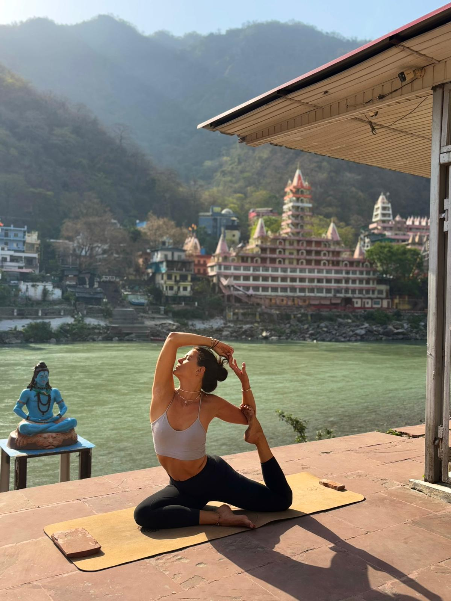

yo:ga time
ma safe place
« Le yoga nous enseigne à guérir ce qui n'a pas besoin
d'être enduré, et à endurer ce qui ne peut pas être guérit
».
B.K.S Iyengar
♡ L'histoire de yo:ga time
YO:GA TIME est né d'un élan presque instinctif et incontrôlable de partager et transmettre ce qui m'a relevée.
Moi c'est Laury, j'ai 36 ans et ma vie à basculé le 12 Août 2021.
Ma fille Lilou est née sans vie et avec elle est partie la version que j'ai été durant 32 ans.
Une chute intérieure.
Des crises d'angoisse.
Une
dépression de 3 longues années.
Cette sensation d'être devenue étrangère à ma propre vie. De ne plus savoir qui je suis ni ce que je fais là.
Tout ce qui faisait sens avant n'en faisait plus.
Les
injonctions.
Les projections.
Les attentes de la
société.
Ma course à la reconnaissance dans le domaine
bancaire.
Tout m'a percutée de plein fouet.
Alors il a fallu faire un choix vital :
Partir pour ne
pas agoniser. Partir pour respirer et aller à la rencontre
de qui j'allais devenir, ou plutôt redevenir.
Partir
pour ne pas devenir le fantôme de moi même.
Pas pour
oublier.
Mais pour survivre autrement.
J'ai pris une année sabbatique qui s'est transformée en quinze mois de voyage en Asie du Sud-Est dont 6 mois en Inde.
En Asie, j'ai découvert une liberté profonde :
celle de
vivre simplement, de ralentir, de ressentir, de me
reconnecter à l'essentiel et de n'écouter que moi, mes
vraies aspirations, peurs, envies, traumatismes et doutes.
Bien sûr, les blessures ne disparaissent pas en changeant de
paysage.
Elles demandent de l'écoute, de la présence et
du temps.
L'Inde, c'était une évidence. Impossible de l'expliquer.
Et
Rishikesh, berceau du yoga, est devenu mon lieu
d'apprentissage et de transformation.
Durant mes 3 mois de vie dans un ashram, j'ai appris la discipline, la simplicité, le silence.
J'ai appris que le yoga n'est pas (qu') une succession de jolies postures mais que c'est un ensemble de préceptes de vie, d'alimentation, de considération de la vie terrestre, humaine & animale. Raison pour laquelle j'ai arrêté de consommer de la viande…
J'ai étudié de nombreux sujets et types de pratiques :
- L'Ashtanga
- Le Vinyasa
- Le Yin yoga
- Le yoga pré et post natal
- La méditation
- Le sound healing
- La philosophie du yoga
- Les techniques de breathwork
J'ai appris à les mettre en pratique et à guider, transmettre et tenir un espace.
Mais surtout, j'ai appris
- À respirer dans l'inconfort
- À écouter mon corps
- À accueillir mes émotions
- À traverser sans fuir
- À observer sans analyser
- À revenir à l'instant présent
La méditation, le son, le travail énergétique et les chakras
ont ouvert des espaces qui me semblent plus subtils et plus
intérieurs.
Des espaces où le deuil de Lilou s'est
transformé.
Ce chemin m'a appris que la douleur ne disparaît pas mais qu'elle peut se transformer selon la manière dont on respire, dont on s'écoute, dont on ralentit et dont on choisit de vivre.
YO:GA TIME est né de cette transformation.
De la
volonté de transmettre une autre façon d'habiter la vie.
Une
vie plus consciente où on se recentre sur ses propres
aspirations.
Une vie plus vraie et plus alignée.
YO:GA TIME n'est pas un lieu de performance.
C'est ma
safe place, votre safe place, la nôtre.
Un espace pour
se déposer. Respirer. Ressentir. Se reconnecter. Vivre ce
qu'il y a à vivre sans se juger et apprendre à sourire dans
l'inconfort.
Ta vie est précieuse. Vis la.
Avec plus de présence.
Plus
de douceur.
Plus de profondeur.
Plus d'empathie
pour toi même.
Alors voilà, c'était quelques mots sur la naissance de cette safe place. YO:GA TIME est là si tu te sens appelée par l'envie d'explorer, te révéler, prendre soin de ton corps, de ton âme et de ton esprit.
𖤓 Ma Safe place, pour qui ?
J'accompagne ceux qui en ressentent l'envie et ou le besoin, à travers le corps, le souffle la présence et les énergies du son dans des périodes où non de transition, de fatigue, de reconstruction, de recentrage, de grossesse et post accouchement.
Mes propositions sont sur mesure, accessibles à toutes et tous et s'adaptent à vos besoins physiques, émotionnels et énergétiques.
✨ Yoga
Des postures variées, dynamiques ou douces, pratiquées avec conscience pour renforcer et assouplir le corps, soutenir la santé des articulations et des fascias, améliorer la mobilité et cultiver une présence stable dans le mouvement comme dans l'immobilité.
- Ashtanga, Vinyasa, Yin
- Yoga pré & postnatal
- Séances douces, dynamiques ou thérapeutiques
Pratiques de yoga pour :
- Soutenir la santé globale
- Améliorer mobilité, souplesse et force
- Relâcher les tensions physiques
- Apaiser le système nerveux
- Améliorer la posture et la respiration
- Renforcer la connexion corps / esprit
- Développer la présence et l'ancrage
- Accompagner les périodes de transition (fatigue, stress, post-partum, reconstruction)
🧘🏻♀️ Cours collectifs ou privés
🧘🏻♀️ Cours off & online
possible
🧘🏻♀️ En français ou en anglais
🌬 Breathwork
Des pratiques de respiration guidée pour réguler le système nerveux, soutenir la santé globale, libérer les tensions et retrouver clarté, énergie et tranquillité d'esprit.
Séances de respiration consciente pour :
- Soutenir une bonne santé globale
- Activer le système parasympathique
- Réduire le stress et l'anxiété
- Améliorer la qualité du sommeil
- Libérer les tensions
- Apaiser le système nerveux
- Exprimer ses émotions
- Retrouver de l'énergie et de la clarté
🧘🏻♀️ Séance individuelle sur mesure
🧘🏻♀️ Séance off &
online possible
🧘🏻♀️ En français ou en anglais
🔔 Sound Healing
Des séances basées sur les vibrations et les sons pour favoriser la détente profonde, apaiser le système nerveux et créer un espace de calme intérieur propice à l'intégration.
Des voyages sonores pour :
- Ralentir
- Favoriser un profond lâcher prise
- Soutenir les phases de transformation
- Apaiser les insomnies, la dépression
- Soulager des maux physiques
Les soins relatifs à des douleurs physiques ne
remplacent en aucun cas des traitements médicaux et ne
peuvent s'y substituer.
Je serais ravie de partager
des informations supplémentaires sur demande.
🪷 Méditation
Des séances guidées de présence et d'attention pour calmer le mental, développer la stabilité intérieure et nourrir une qualité de calme durable.
Pratiques de méditation pour :
- Apaiser le mental
- Calmer le système nerveux
- Activer le système nerveux parasympathique
- Réduire le stress et la charge mentale
- Améliorer la concentration et la clarté d'esprit
- Favoriser un sommeil plus réparateur
- Développer la présence et l'ancrage
- Créer un espace de recul et d'écoute intérieure
🧘♀️ Séances individuelles ou collectives
🧘♀️ En
présentiel & en ligne
🧘♀️ En français & anglais
✍️ Espaces d'expression & d'accompagnement
Cercles, temps de parole, écriture intuitive, pratiques
introspectives.
Des espaces sécurisés pour déposer,
comprendre, transformer. Des retraites de yoga pour
s'accorder du temps et revenir à soi.
💰 Tarifs pour les particuliers
🧘🏻♀️ Yoga
Ashtanga · Vinyasa · Yin · Pré & Postnatal
Cours privé à votre domicile
- 60 €
Cours collectif à votre domicile (minimum 3 personnes)
- 25 € PP
Cours collectif en ligne (minimum 5 personnes)
- 13 € PP
🧘🏻♀️ La durée d'un cours de yoga varie de 60 à 75 minutes, peut inclure de la respiration consciente, des asanas avec ou sans flow et éventuellement de la méditation.
🔔 Sound Healing & accompagnements énergétiques
1. Nettoyage énergétique de l'espace
20 minutes — 50 €
Un soin destiné à purifier et réharmoniser un lieu (domicile, cabinet, chambre). Il aide à dissiper les charges émotionnelles, les tensions accumulées et à restaurer une atmosphère apaisante, propice au repos, à la clarté et à l'ancrage.
👉 Idéal après un déménagement, une période difficile ou pour retrouver une sensation de "chez soi".
2. Soin de guérison globale
Durée : 60 à 75 min
- 70 € par personne
- 2 à 3 personnes : 40 € pp
- À partir de 4 personnes : 30 € pp
Un accompagnement énergétique complet qui agit sur l'ensemble des plans : physique, émotionnel, mental et énergétique. Ce soin soutient les processus naturels d'auto-régulation du corps et invite à un profond réalignement intérieur.
👉 Pour celles et ceux qui traversent une période de transition, de fatigue ou de remise en question.
3. Dépression & états de lourdeur
Durée : 60 à 75 minutes — 75 € par personne
Un espace sécurisant pour apaiser le système nerveux, relâcher les tensions internes et soutenir les états de tristesse, de vide ou de découragement. Le soin se fait dans une approche douce, respectueuse du rythme de chacun.
👉 Ne remplace pas un suivi médical, mais agit en complément.
4. Soin pour l'insomnie & troubles du sommeil
Durée : 60 à 75 minutes — 75 € par personne
Un soin relaxant qui favorise le lâcher-prise, apaise le mental et aide le corps à retrouver un rythme de sommeil plus naturel. Idéal en cas de difficultés d'endormissement ou de réveils nocturnes.
5. Technique spécifique de sommeil profond
Durée : 45 min — 65 € par personne
Une technique énergétique ciblée pour accompagner les personnes souffrant d'insomnies persistantes. Elle agit sur le relâchement profond du système nerveux et la mise au repos du mental.
6. Harmonisation des ondes cérébrales
Durée : environ 45 min
- 65 € par personne
- 2 à 3 personnes : 35 € pp
- À partir de 4 personnes : 30 € pp
Un soin subtil visant à rééquilibrer l'activité mentale, favoriser la concentration, la clarté et l'apaisement intérieur. Particulièrement adapté aux personnes anxieuses, stressées ou mentalement surchargées.
7. Détox mentale & émotionnelle
Durée : environ 60 min — 70 € par personne
Un soin pour libérer les pensées envahissantes, schémas répétitifs et charges émotionnelles stagnantes. Il permet de retrouver de l'espace intérieur, une respiration mentale plus fluide et une sensation de clarté.
8. Soulagement énergétique des douleurs du dos
Durée : 45 à 60 min — 75 € par personne
Ce soin est conçu pour accompagner les personnes souffrant de tensions, raideurs ou douleurs dans le dos, souvent liées au stress, à la fatigue émotionnelle, à la charge mentale ou à un manque de détente profonde du système nerveux. Il ne s'agit pas de « corriger » le corps, mais de lui offrir un espace de relâchement, de circulation et de rééquilibrage.
Ce soin est un accompagnement de bien-être. Il ne remplace pas un avis ou un suivi médical, mais peut venir en complément, dans une approche globale et douce.
9. Harmonisation des chakras
Durée : 60 minutes — 75 € par personne
Ce soin vise à rééquilibrer les centres énergétiques du corps (chakras) afin de favoriser une meilleure circulation de l'énergie, un apaisement global et une sensation d'alignement intérieur. Il agit en douceur sur les plans physique, émotionnel et mental, sans manipulation, en respectant le rythme et la sensibilité de chacun.
✨ Tarifs dégressifs « abo »
- Cure 3 séances : –10 %
- Cure 5 séances : –15 %
☑️ Les soins de sonothérapie sont réalisés à votre domicile.
☑️ Les cures de 3 et 5 séances sont réalisées dans un délai de 6 mois maximum à compter de l'achat.
🪷 Méditation
Séance privée à votre domicile
- 55 €
🌬 Breathwork
Séance privée à votre domicile
- 60 € – séance individuelle (60 min)
Séance collective (minimum 3 personnes)
Lieu à convenir
- 25 € / personne
✍️ Cercle de femmes / espaces d'expression À venir
(parole, écriture, pratiques introspectives)
Collectif
- 45 € / personne – cercle ou atelier (≈ 2h)
📌 Informations pratiques
- Séances à domicile, en entreprise ou dans des lieux partenaires
- En présentiel ou en ligne selon les pratiques
- En français ou en anglais
- Accompagnements possibles sur mesure
Un supplément de 5 € sera ajouté au prix si le domicile est à plus de 20 kilomètres de la place Haguenau, à Strasbourg.
💰 Tarifs Événements & Entreprises
Un accompagnement sur mesure pour veiller au bien être, à la régulation du stress et à la cohésion de votre / vos equipe(s) aux moyens :
- Du yoga
- Des bains sonores
- De la respiration
- De la méditation
- cercles et espaces d’expression
Tarifs sur devis.
🧘♀️ Yoga
Ashtanga · Vinyasa · Yin · Pré & Postnatal
Pratiques de yoga adaptées pour relâcher les tensions, soutenir le corps et favoriser équilibre, mobilité et présence.
🔔 Sound Healing / Voyage sonore
Harmonisation du système nerveux, détente profonde et intégration émotionnelle par le son et les vibrations.
🌬 Breathwork
Régulation du système nerveux, activation du système parasympathique, soutien de la santé globale et libération des tensions par la respiration consciente.
✍️ Cercle de femmes / espaces d'expression À venir
(parole, écriture, pratiques introspectives)
Cercle collectif
- 45 € / personne – cercle ou atelier (≈ 2h)
📍 Informations pratiques
- Séances à domicile, en entreprise ou dans des lieux partenaires
- En présentiel ou en ligne selon les pratiques
- En français ou en anglais
- Accompagnements possibles sur mesure
✨ Une séance dure entre 60 et 75 minutes et peut inclure quelques techniques de respiration et méditations.
𓁿 Certifications & formations
Plus de 1000 heures d'études et de pratique en yoga et sound healing, suivies à Rishikesh, en Inde, berceau du yoga et au travers de mes voyages en Asie.
Formations réalisées au sein du Vinyasa Yoga Ashram, entièrement en anglais, lors de 3 mois en immersion dans un ashram, à Rishikesh, haut lieu de spiritualité.
Détail des formations :
- 500h Vinyasa & Ashtanga
- 100h Yin Yoga
- 85h Yoga pré & postnatal
-
Formation en Sound Healing
(Niveau I - II - III)
L'ensemble de mes certifications est reconnu par Yoga Alliance International.